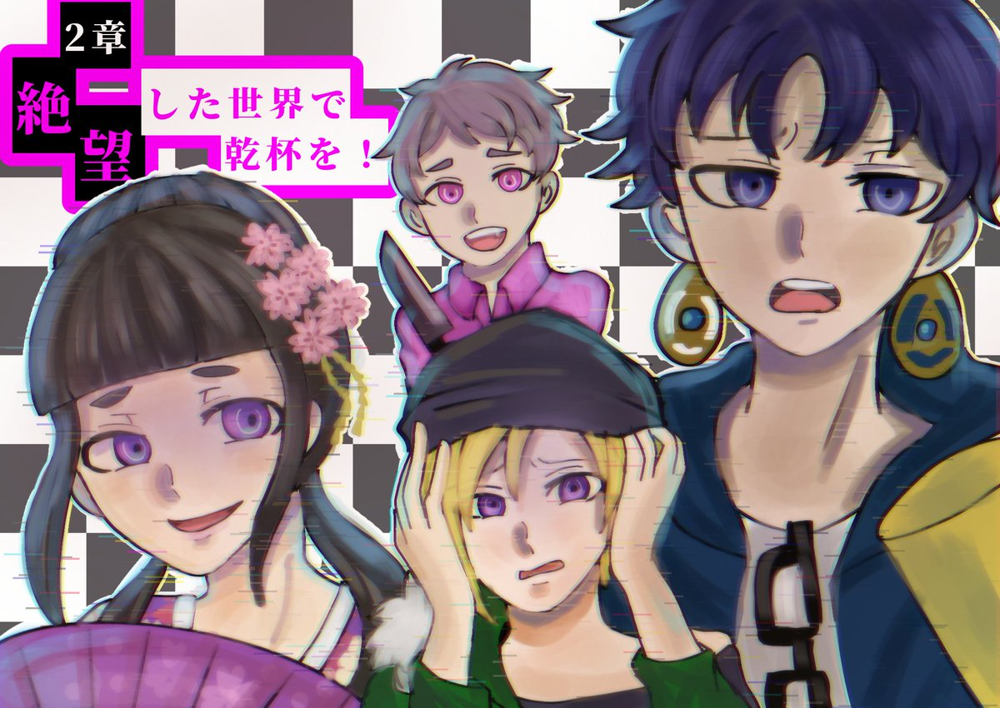
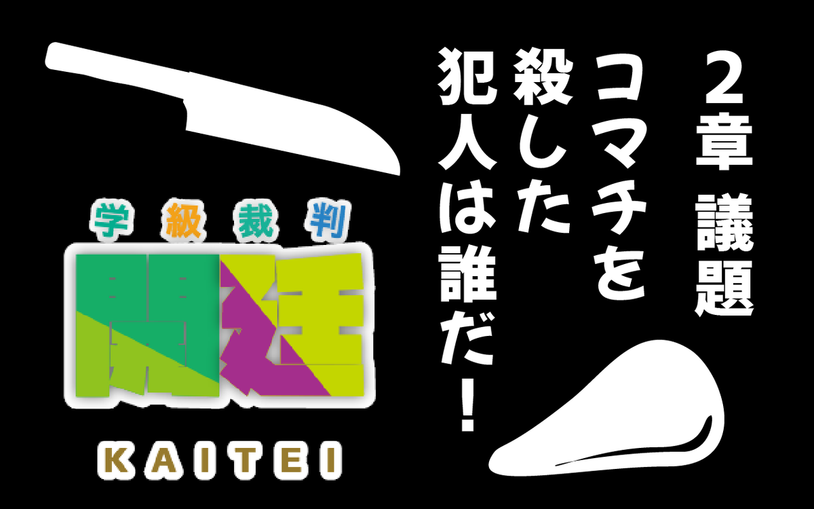
【A-1 自白】ハナコ
自分がコマチを殺した。
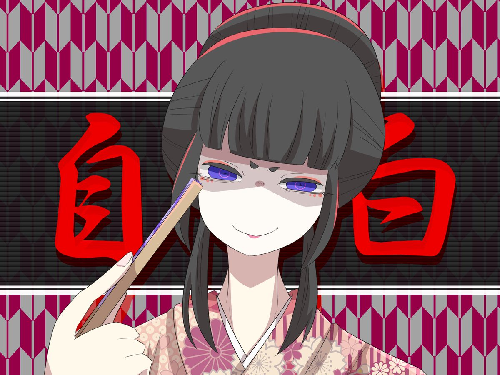
【A-2 自白】カルロ
自分がコマチを殺した。
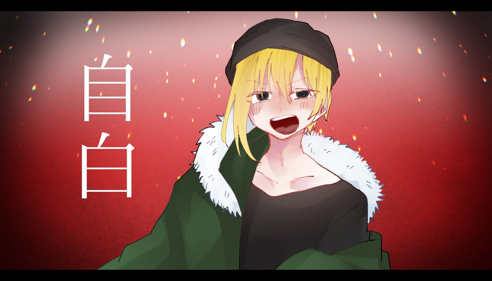
【B-1提案】クリシュナ
現時点の留学生の発言を無条件には信用できない。まずは状況を整理しよう。話はそれからだ。
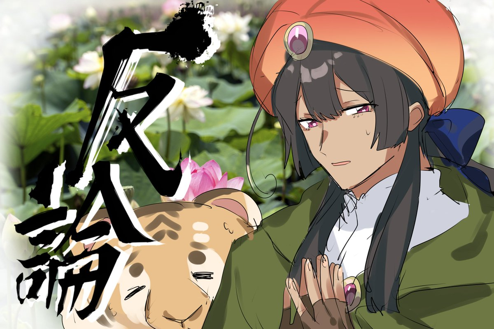
【B-2 疑問】ラーフル
アナウンスはどのタイミングで鳴るんだろうか。事件解決の手がかりになるかもしれない。
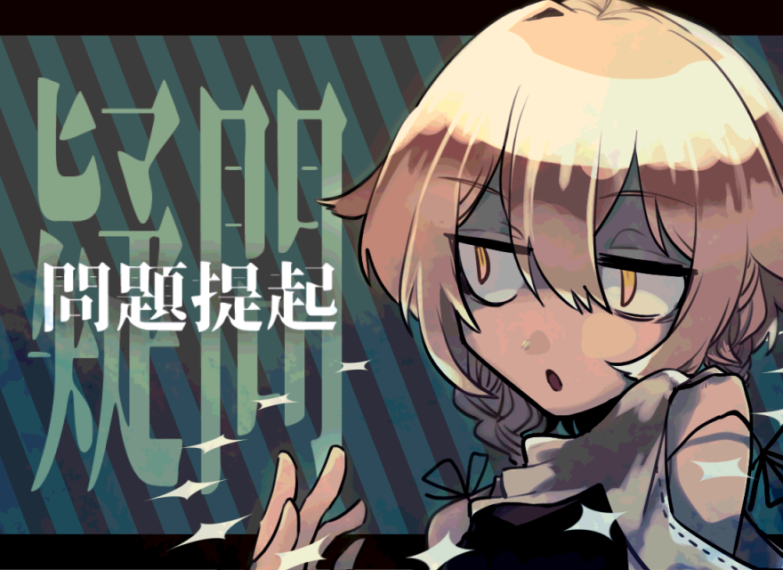
「あぁ、これ決まりがありましてね、アナウンスが鳴るのは“クロ以外の生徒がはじめてシロを発見したとき”です。前回は全員いたからアナウンスいいかなって思ってやってなかったんですけどネ、あはは～ मुझे क्षमा करें」
【C-1 コトダマ・遺体】
刺し傷がいくつもある。包丁で何度も刺されたようだ。
【C-2 コトダマ・遺体】
かなりの量の血が流れている。
【C-3 コトダマ・現場】
和風の髪飾りが落ちている
【C-4 コトダマ・現場】
金髪の髪の毛が落ちている
【C-5 コトダマ・現場】
ピアスが落ちている
【D-1閃き】
凶器の場所の出所を特定すれば、犯人特定のヒントになるのではないだろうか。
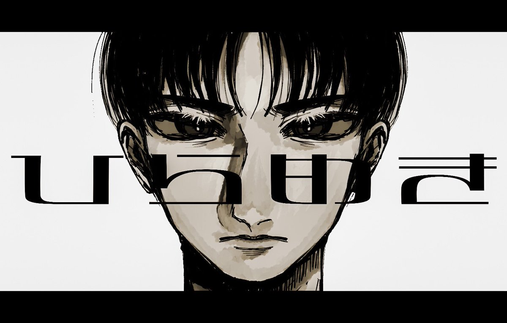
【E-1 コトダマ・厨房】
鍋、包丁、小麦粉…いろんな調理器具や食材が散乱していて、何が何だかわからない。
包丁もあるみたいだが、減っているのかどうかわからない。
【F-1 証言】チャイ神
２階の部屋の簡易キッチンにはもともと３種類の包丁が備え付けられていた。２本しかなかったということは、コマチの部屋の包丁が一本減っていることになる。
【F-1 同意】アニク
現場の包丁は僕の部屋にある包丁のひとつと全く同じ形だったよ。3階の簡易キッチンにある包丁が全部同じものだとしたら、あの包丁はナンダくんの部屋から持ち出されたものに違いないと思う。
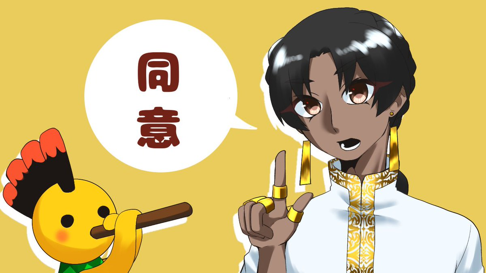
【G-1 コトダマ・コマチの電子生徒手帳】
メモアプリに一件だけメモが残されている『きょう 深夜1時に講堂に集合』
【G-2 コトダマ・講堂】
壁にスプレーで『絶望こそ救い』と書かれている
【H-1 推理】アーシャ
集合、ということは何人かで集まったということだと思う。先ほどの2人の自白も不自然だ。留学生全員が手を組んで自分たちを誤った推理へ導こうとしているのなら、コマチの自殺という可能性もあるんじゃないだろうか。
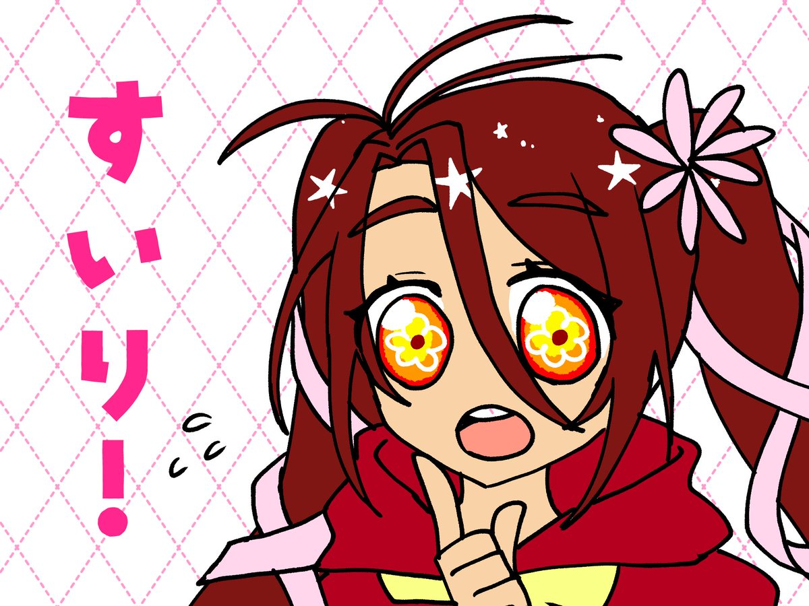
【H-2 同意】ドゥルーヴ
ここ最近、留学生は皆自分たちを「絶望」させようとしているみたいだった。目的が同じなら、コマチも手を組んで死んだ可能性がある。
【J-1 疑問】パラヴィ
「留学生だけが絶望しているのはどういうことでしょう？動機として見せられた動画ではインドだけが偽物だったらしいですし、そもそも絶望した方たちがこの学校に留学した理由もわかりません…。」
「え、だってインド人が絶望するはずないじゃないですか」
【K-1 コトダマ・資料】
『未来機関からの申し入れを受け、20XX年より更生の見込みのある生徒を留学生として受け入れることにした。
現在は該当する記憶を封じることで絶望の脅威を抑え込んでいるが、些細なきっかけで彼らの危険な思想は蘇るだろう。細心の注意が必要だ』
【K-2 コトダマ・先生の日誌】
『今年受け入れた4人の留学生の経過は順調。インド人の生徒たちとも打ち解けて楽しそうに過ごしている。
再び絶望を思い出したときにどうなるか心配だが、彼らなら乗り越えてくれるだろう。
いつか、彼らが母国の希望となりますように』
【L-1 コトダマ・ナラクーバラの㊙︎情報】
奈落腹 伸の㊙︎情報！
カレーを食べる時は美味しんぼの作画になるよ。「お前って友達少なそうだな」って言われるとめちゃくちゃ悲しむよ！
【L-2 見識】モハメド
自分は彼の㊙︎情報のメールを受け取った。何故か彼の名前は漢字で書かれていて、日本人であることを示唆するようだった。ナラクーバラも絶望の残党だとしたら、彼も容疑者に含まれるのではないだろうか
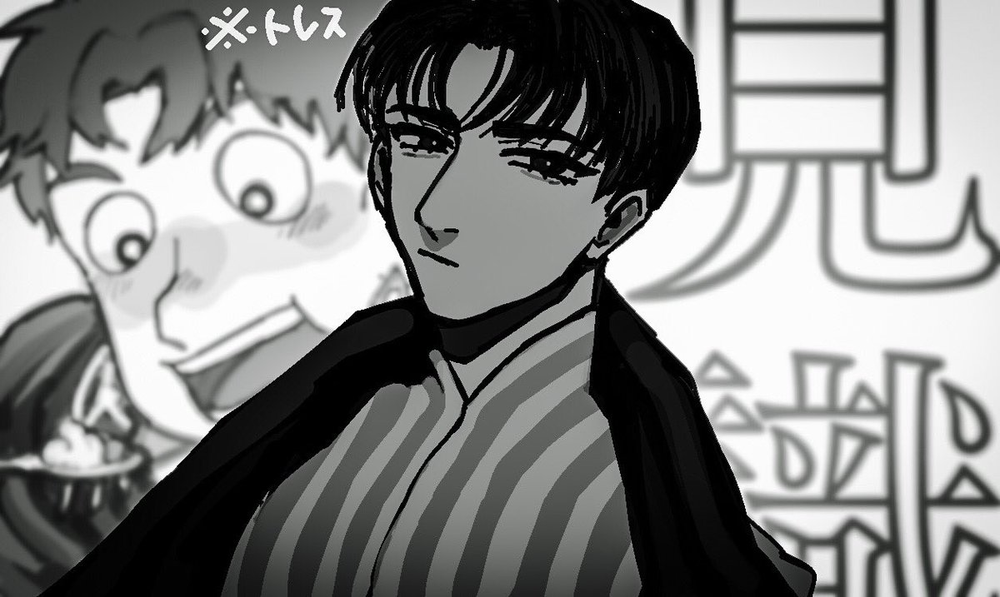
【M-1 証言】シン
確かに自分は日本出身で、あの日絶望を思い出した一人だ。
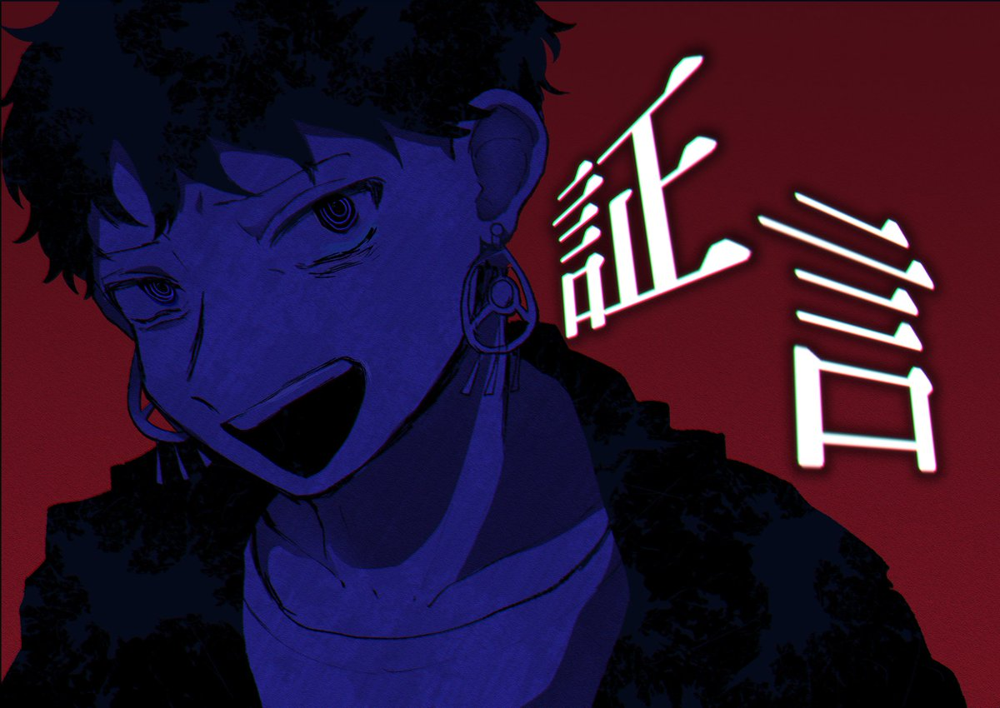
【M-2 自白】シン
コマチを殺したのは俺だよ！
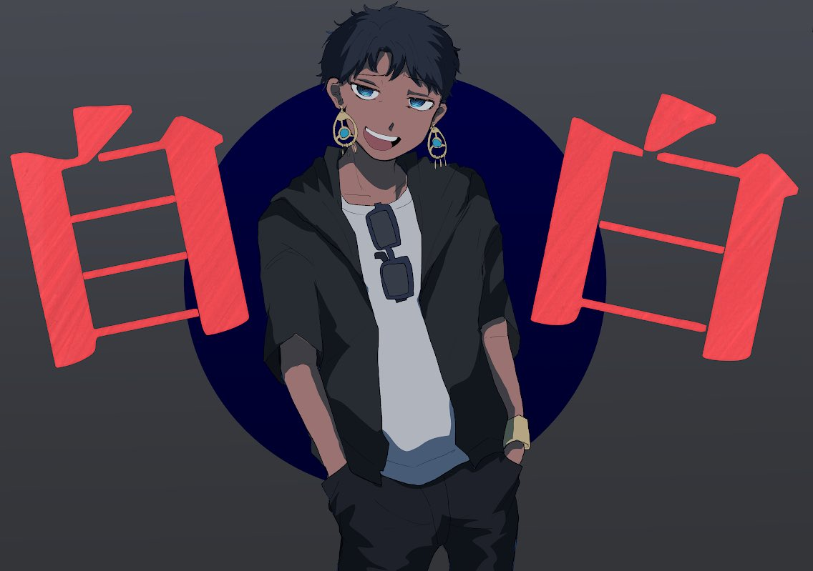
シン｢そう！奈落原 伸！！！ごっつい名前だよね！！本名だけど！！｣
【N-1 コトダマ 現場】
誰かが乾く前の血液を踏んだ跡がある。
【N-2 提案】エク
靴底に血液が付着している人物がクロなんじゃないだろうか。ここで容疑者の靴底を確認しよう。
「それはいい考えですね！！ではでは留学生諸君の靴の提出を求めましょうか。シン君、ハナコ君、カルロ君は靴を脱いで私に提出してくださ〜い！」
＊モノガネが留学生たちの靴を回収していく。モニターにモノガネの手元が映し出された。
＊モノガネはシン、ハナコ、カルロの靴を順に見せていく
＊シンの靴は異常なし。モノガネがハナコの靴…下駄…？をモニターに映す
＊ハナコの履物も異常ないようだ。最後に、カルロ君の靴が映される
＊カルロの靴底に、乾いた血の色が見えた
「はーいでは、投票に入りまーす！各々手元のパネルを操作し、犯人だと思う人物を選んでポチッとしてください」
【O-1 反論】
コマチを殺したのは僕じゃない！！！！
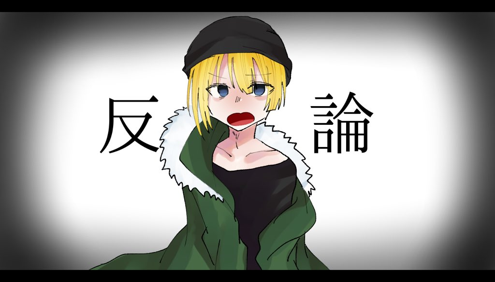
【理論武装開始】
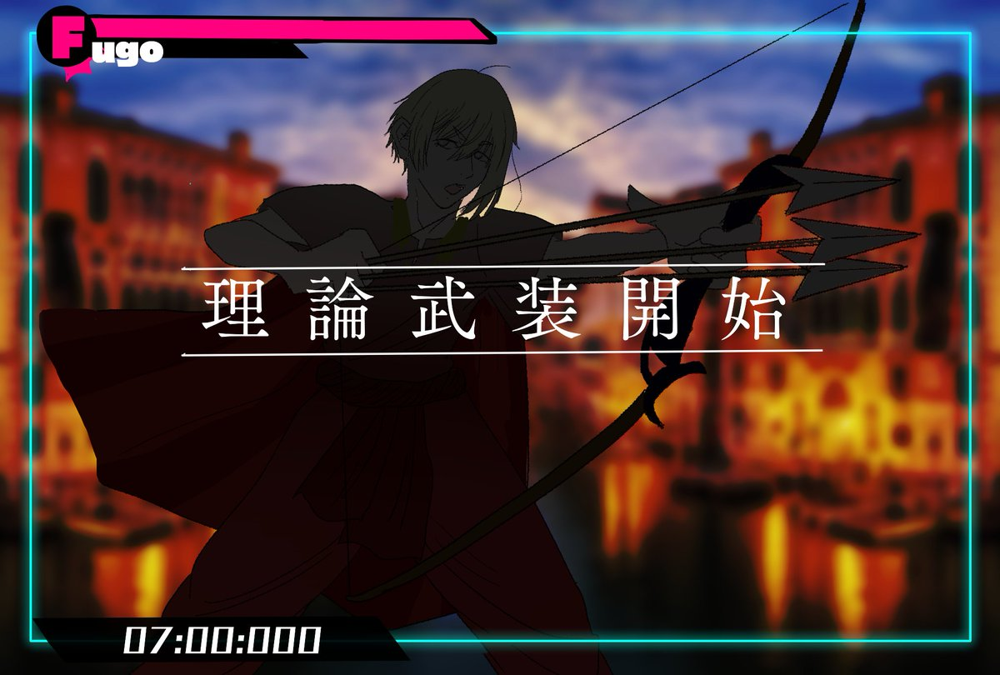
【理論武装1】
事件の日、自分はコマチに呼び出されて体育館に行った
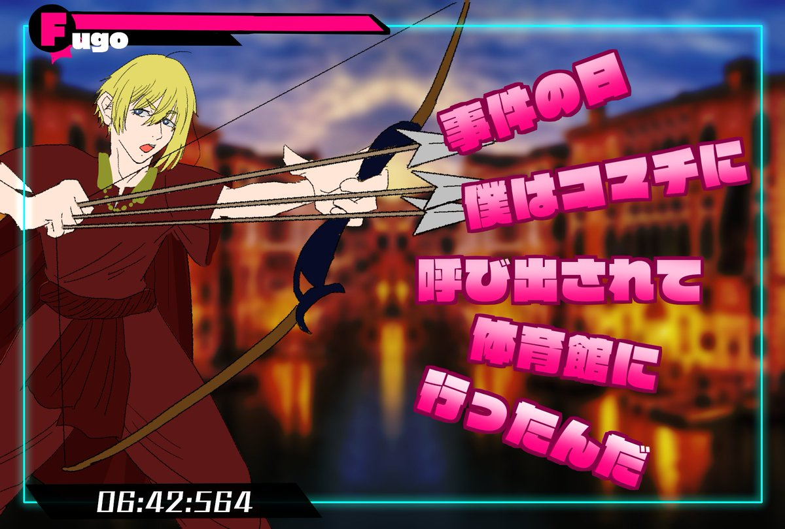
【理論武装2】
僕が着いた時コマチは既に死んでいて、死体に寄ったために血を踏んでしまっただけだ
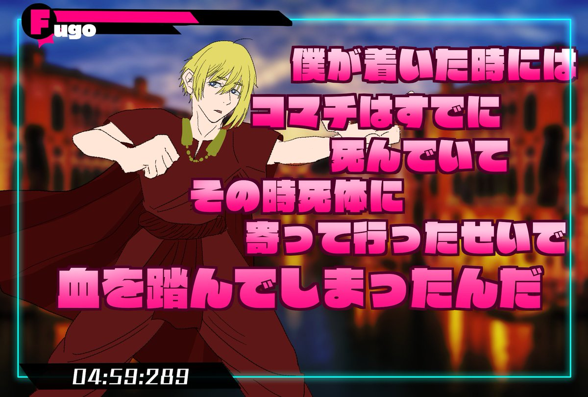
【理論武装3】
僕は日本人の生徒たちにはめられただけだ！
(○死体 △発見 ×の □アナウンス)
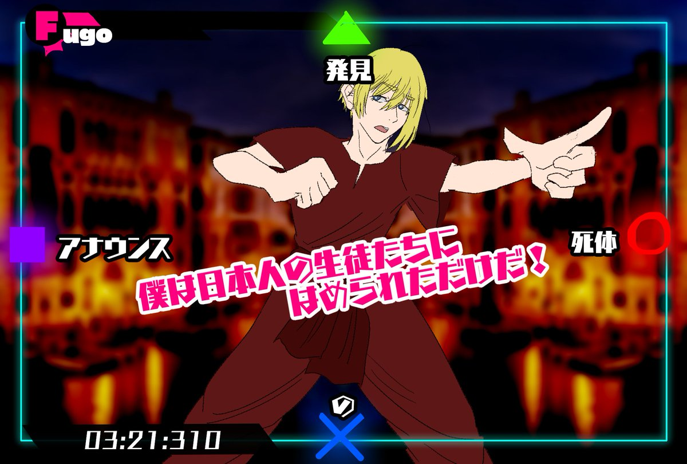
【P-1 論破】
死体発見アナウンスは“クロ以外の人物がはじめてシロを発見したとき”に鳴る。君が既に死んでいたコマチを目にしていたなら、その時にアナウンスが流れるはずだ。君がコマチを殺害したクロだから、死体のそばにいてもアナウンスが流れなかったということだろう。
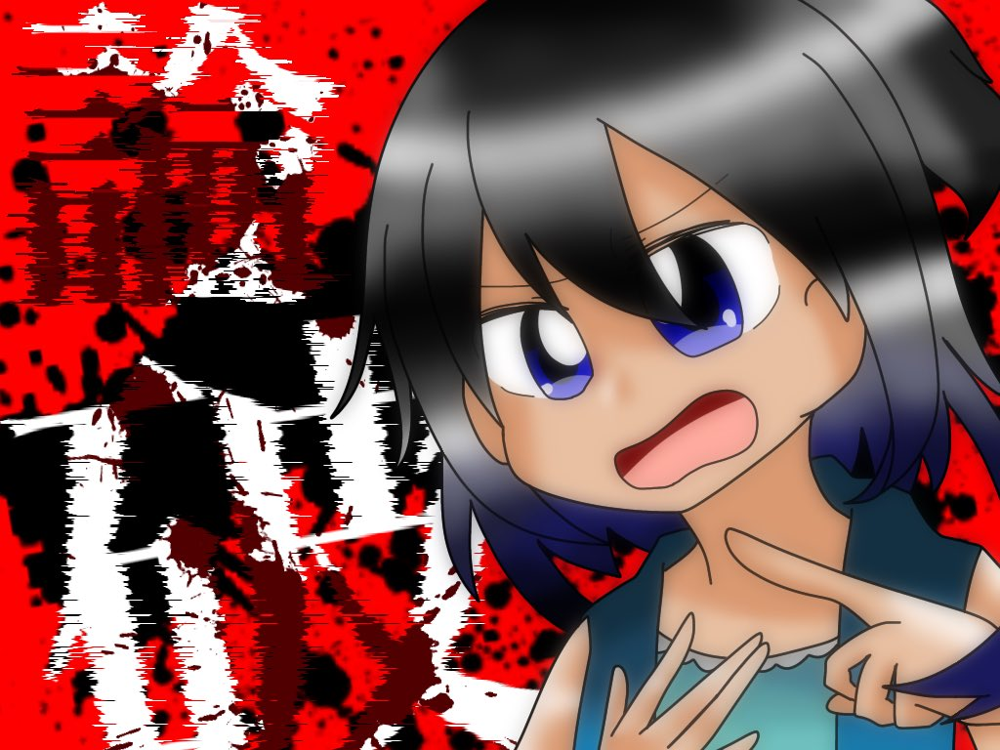
【Break！】
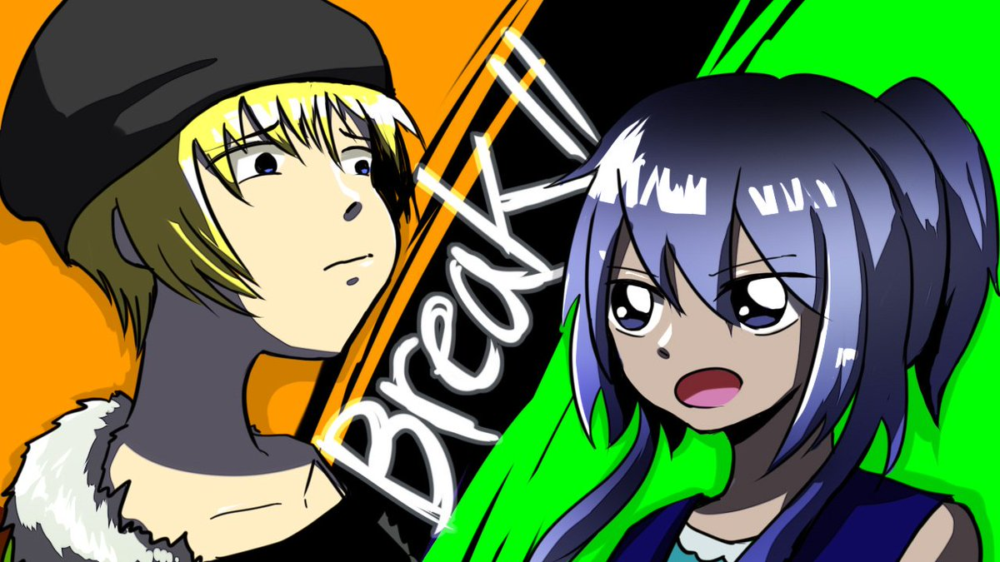
「どうしたんですか、カルロ君。急に反論だなんて」
「まるで人が変わったみたいじゃあありませんか」
【Q-1 証言】リナ
自分はカルロの㊙︎情報を受け取った。それによると、彼は多重人格らしい。今、目の前にいる彼はカルロと別人なんじゃないだろうか。
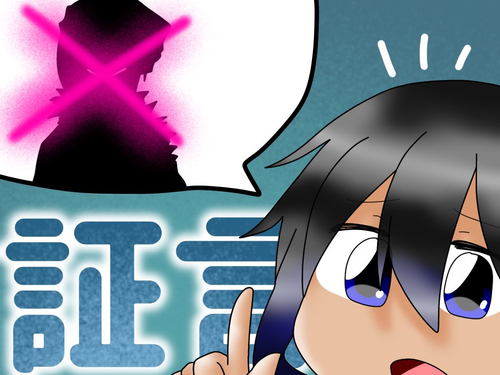
【Q-2 カルロの㊙︎情報】
カルロ・ジョバンニの㊙︎情報！
害虫に接触すると安らかに気絶するよ。ちょっと今妹ちゃんが誘拐されて行方不明なんだ。あとは〜踊らないインド映画が理解できないみたいだよ。あとこれは超極秘情報なんだけど… 彼、多重人格なんだって
「なるほど、フーゴ君。では、あなたの口から“自白”をお願いできますか？ カルロ君が最初にやっていた自白では意味がありませんからネ」
「できませんか？そうですネ〜、ではでは出血大サービス！もし大人しく自白してくれたなら、あなたの大切な妹サンを、ご両親の元へ返して差し上げますヨ！」
【R-1 自白】フーゴ
自分がコマチを殺した。気が付いた時、目の前に包丁を持ったコマチがいた。自分が殺されると思って咄嗟に包丁を奪い、彼を何度も刺してから逃げた。
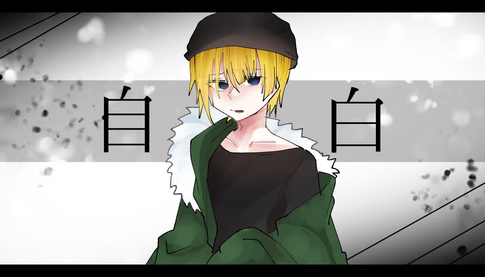
フーゴ｢…………、……、ええ、と……、……みんな、今まで……ありがとう……僕も、カルロも……みんなの事は、大好きだった……｣
フーゴ ｢………………本当なら、今ここに立っているはずはコマチくんだったんだな………｣
「ええ、そうですネ！ 当初の予定としては、コマチ君がクロでした。その件については発案者の方がより詳しくご存知ですので、そちらの方に解説をお願いいたしましょうか」
シン「は〜い、じゃあ俺から説明するね」
シン「まず俺たちがこの事件を起こしたのはもちろん、皆に絶望してもらうためだった。」
シン｢最初はね、カルロ達に任せようと思ったんだよ。でもあまりにも甘っちょろすぎるから、俺がみんなを絶望させてあげようと思って！｣
シン「俺の考えた台本だと、つまりコマチがクロでカルロがシロだったんだ。まずはコマチがカルロを殺して、コマチは自分を傷つけ負傷した状態で発見される。｣
シン｢裁判ではまずハナコに疑いの目を向けさせ、頃合いを見て俺が留学生であることを明かす。皆、その意外性から簡単に俺を疑うだろうね」
シン「ちゃんと細かくシナリオを作ってたんだよ？このシナリオ通りに進めれば、皆は本当のクロを当てることができずにクロが勝つ。クロが勝ったらどうなるか知ってる？｣
シン｢そう、クロ以外がおしおきを受けるんだよ。みんな仲良く絶望してオシオキを受けるってわけ。これが俺たちの目的だった」
シン「でも、ちょっとトラブルが発生してね。カルロがコマチを殺してしまった。カルロじゃないか…フーゴかな？｣
シン「まぁそこら辺は本人に聞けばわかるんだけど……」
シン｢現場を見た時、なんとなく状況が分かったよ。彼を守ろうとした彼ではない何かがいるんだってね。映画ではよくあることだから」
シン「たった一人、絶望してないやつが紛れてたせいで俺たちの作戦は失敗した。まあ、いいよ。この裁判はクロは負けだ。喜ぶといい」
シン「でも……………」
シン「でもね、これは俺たちの勝利だ」
＊シンは話しながら自分の持ち場から降り、裁判場の影から一斗缶を持って戻ってきた。彼はその蓋をあけ、裁判場全体に勢いよく中身をぶちまける。あなたにもかかったその液体から漂う匂いに、思わず身を強張らせる。その直後、
シン「映画って、意外性が大事でしょ？」
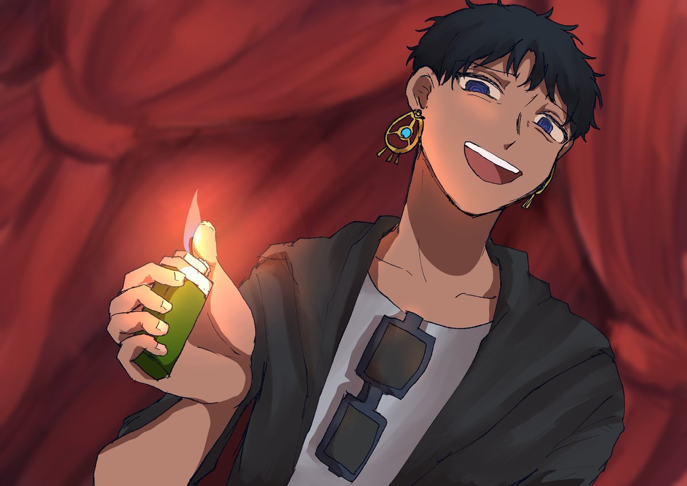
＊火の灯ったライターが彼の手から離れた。そして、裁判場が瞬く間に火の海に包まれ…
「これで皆なかよく絶望してくれるよね？！」
「お任せください」
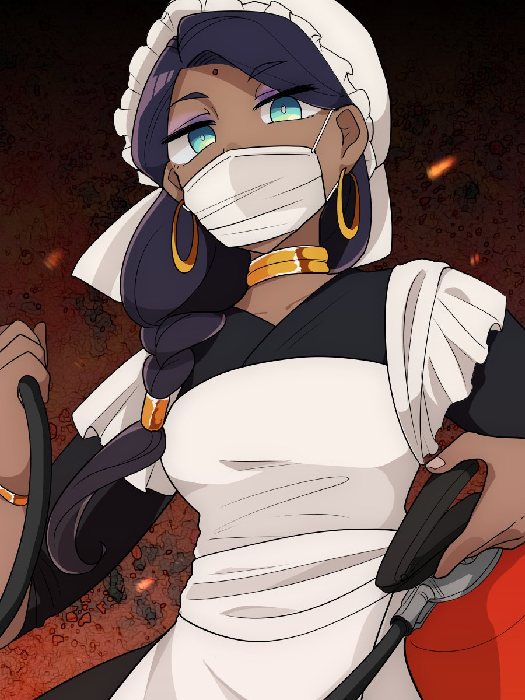
＊……てしまうその前に、どこからか声が聞こえ、裁判場に消化器の音が鳴り響いた
＊室内に消化器の粉が舞う。どうやら、火が燃え広がる前に無事消火されたみたいだ
「ちょっとシン君〜〜〜いくら絶望させたいからって全滅を企むのは禁止だからね！！番組2章で終わっちゃうじゃん！」
「はいはい、では時間も時間だし。遅くなっちゃったけど投票しましょ。前回と前々回は省いちゃいましたけど、このまま全章投票なしというのもあれなので…」
「はいはーい！！投票の結果が出ましたヨ！投票の結果、クロは…【フーゴくん】に決まりました！オメデトウゴザイマス！大正解ですヨ！！なんだかみなさんしょんぼりしながら投票してましたネ」
フーゴ｢……………………、…………お別れだね｣
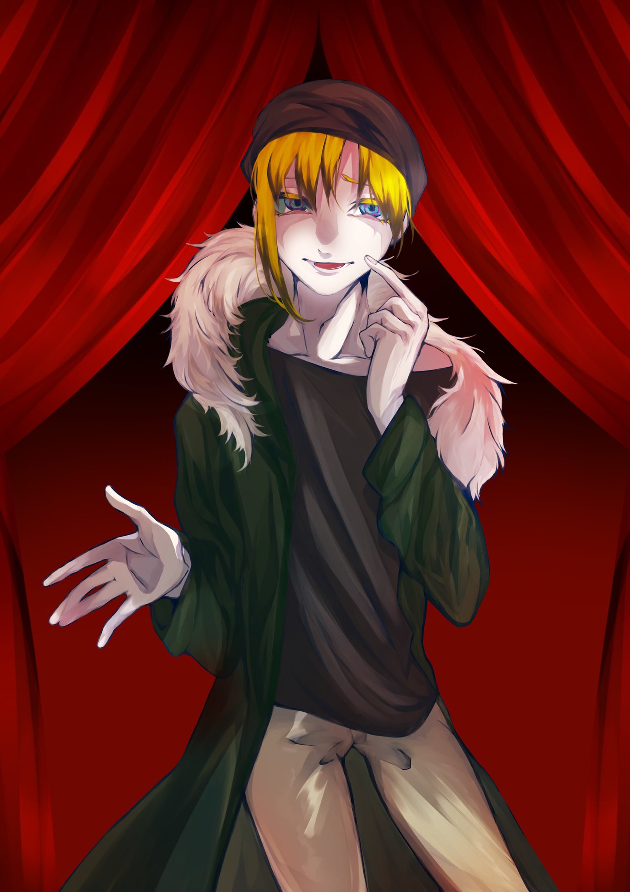
「……では！コマチ君を包丁で滅多刺しにして殺してしまったクロ、フーゴ君のおしおきを開始します！！」
＊どこからか飛んで来た鎖が、フーゴの首を捉えた。
モハメド「貴様が自白したことで妹が救われるというのであれば、（フーゴくんに近寄り）」
モハメド「貴様は妹に顔を見せる義務がある」
モハメド「なあそうだろう、フーゴ、カルロ。」
フーゴ｢……、……？(驚いて)｣
モハメド「鎖を引きちぎり、貴様が逃げる手助けを、（フーゴくんの手を無理やりとって）」
フーゴ｢な……っ、ダメだよ、そんな事したら君まで……！｣
モハメド「友人として、してやろう」
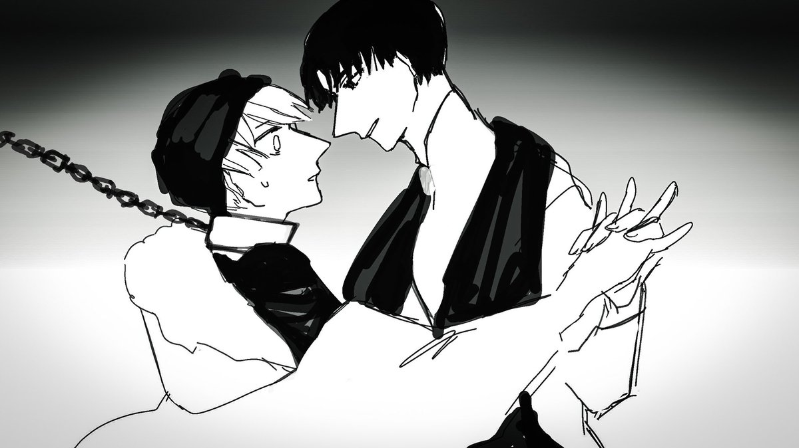
＊黒い槍が一本、モハメドめがけて飛んでくる。それは彼の肩を勢いよく貫き、辺りに血しぶきが舞う。
＊ありえないほどの痛みで意識が混濁する。手の力が緩み、イタリアから来た友人を引く鎖の力が強くなる。
＊彼はそのままどこかへと連れ去られ、見えなくなった